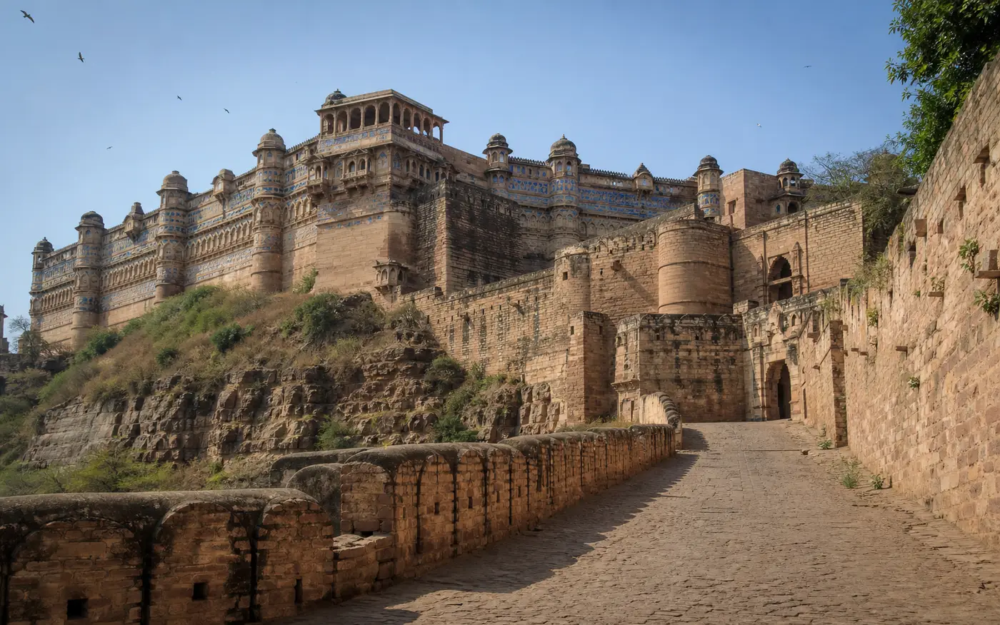
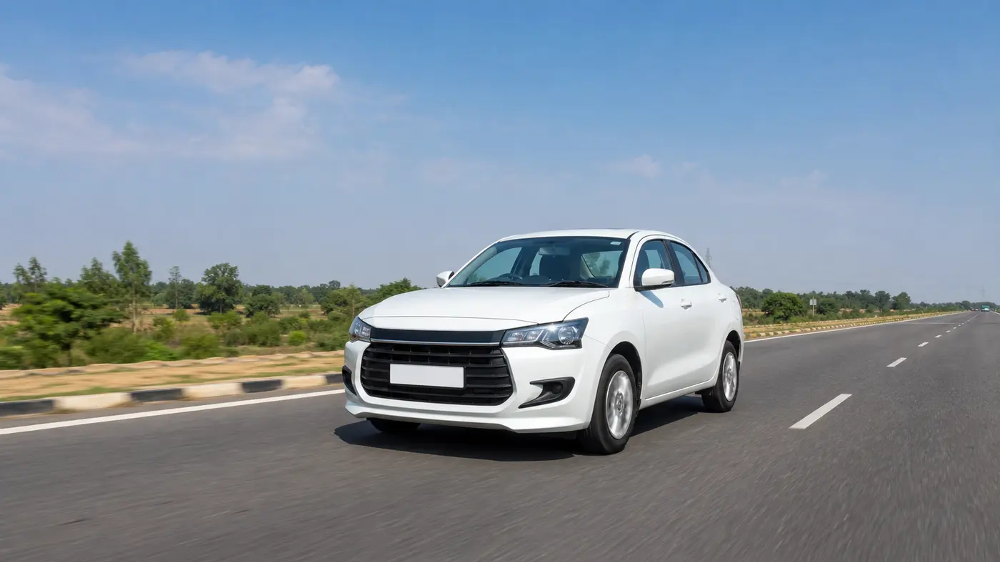

Agra To Gwalior Taxi₹3,000 Round Trip · AC Sedan
Approx. 120 KM Via NH-44
2.5–3 Hrs · Driver Waits At Every Stop

The Easiest Long Day We Publish A Price For
Gwalior is only about 120 km from Agra, almost all of it on four-lane highway, so you can be at the fort gate before mid-morning and still be home for dinner. Because the drive is predictable, we can put a number on it: ₹3,000 round trip in an AC sedan, fuel and driver included. It crosses into Madhya Pradesh, but that is our paperwork to deal with, not yours.
Agra To Gwalior Taxi At A Glance
~120 KM
From Agra, Via NH-44
2.5–3 HRS
Each Way, Four-Lane Highway
₹3,000
Round Trip, AC Sedan
UP › MP
Inter-State, No Permits For You
Agra To Gwalior Taxi Fare
The sedan round trip is a published price. The larger cabs are quoted on WhatsApp because we do not have a standing figure for them on this route.
| Cab Type | Seats | Round Trip | One Way |
|---|---|---|---|
| AC Sedan (Dzire / Amaze) | 4 | ₹3,000 | from ₹1,800 |
| AC SUV (Ertiga) | 6 | Fare on WhatsApp | Fare on WhatsApp |
| AC SUV (Innova Crysta) | 7 | Fare on WhatsApp | Fare on WhatsApp |
| Tempo Traveller | 12–15 | Fare on WhatsApp | Fare on WhatsApp |
Fares cover fuel and driver charges. Tolls on NH-44 are paid by you at the booth, and monument parking is extra at actuals. There is no surge pricing. An overnight or two-day version is quoted separately — see the FAQ. Full Agra taxi fare list for every other route.
The Road, And The State Line
- About 120 km via NH-44, a well-maintained four-lane national highway for effectively the whole run.
- 2.5 to 3 hours each way, which is what makes Gwalior a genuine day trip rather than an endurance test.
- This is an inter-state route — Uttar Pradesh into Madhya Pradesh. No permits or paperwork are needed from you; the registration and permit side of crossing the state line is ours to handle.
- Pickup from any Agra address — hotel, home, Agra Cantt, Agra Fort station or Kheria Airport.
- Tolls on NH-44 are paid at the booth as you go, rather than folded into the fare and argued about later.

Four-Lane Most Of The WayWhat There Is To See
A full day comfortably covers four or five of these. Your driver can suggest an order that avoids crossing the city twice.
Gwalior Fort
The hilltop fort that dominates the city, and the reason most people make this drive. Man Singh Palace, with its tiled bastions, sits inside it — that is the building in the photo above.
Jai Vilas Palace & Museum
The 19th-century palace of the Scindia family, now partly a museum. Usually the second stop of the day.
Teli Ka Mandir
The tall temple within the fort complex, distinctive for its shape and worth the walk if you are already up on the hill.
Sas-Bahu Temple
A pair of carved temples, also inside the fort, and an easy addition once you are inside the gates.
Tomb of Tansen
The resting place of the musician of Akbar’s court, in the old part of the city.
Pick Four Or Five
Trying to do all six in a day means rushing. Tell us which matter most to you and the driver plans the day round them.
Clear Fare Breakdown
What The ₹3,000 Covers
The round-trip sedan fare, and what sits outside it.
Included In The Fare
- Private AC Cab For The Full Day
- Fuel And Driver Charges
- Waiting At Every Monument Stop
- Inter-State Permit Requirements — Handled By Us
- Door-To-Door Agra Pickup And Drop
- Driver Name, Number And Car Number Before Pickup
Paid Separately By You
- Tolls On NH-44, At The Booth
- Monument Entry Tickets And Parking
- Meals On The Way
A Typical Day
- Morning — pickup from your Agra address and out onto NH-44.
- Late morning — arrive Gwalior, roughly 2.5 to 3 hours later. Start at the fort while the day is still cool.
- Afternoon — Jai Vilas Palace, and whichever of the temples and the Tansen tomb you have chosen.
- Evening — drive back to Agra, with the driver having waited at every stop in between.
- Want an overnight instead? We can hold the cab for a next-day return or a flexible pickup — quoted separately from the ₹3,000 day rate.
Why Book This Route With Us
A Price You Can See
₹3,000 for the sedan round trip is published here and on our fare list — not produced after we hear your plan.
The State Crossing Is Ours
UP into MP needs the vehicle side to be in order. That is our job; you bring nothing but yourselves.
Waiting At Every Monument
On a round trip the driver waits at each stop, with no charge for however long the fort takes you.
A Sensible Visiting Order
Gwalior’s sites are spread out. Your driver can suggest a sequence that avoids crossing the city twice.
Tolls Paid As You Go
NH-44 tolls are paid at the booth rather than estimated into the fare, so nothing is padded.
Runs Every Day
Holidays and festivals included, with no advance needed for most bookings.
How Booking Works
01 — Send Your Trip Details
Travel date, passengers, pickup point in Agra, and whether you want the day trip or an overnight.
02 — Fixed Fare Confirmed
Confirmed in writing on WhatsApp, including the expected NH-44 tolls, so the full cost is clear before you say yes.
03 — Driver Details Shared
Name, mobile number and car registration number before pickup — match the plate before boarding. No advance for most bookings.
Local Agra Operator
Your Local Travel Partner In Agra
Padma Shree Travels operates from Shamsabad, Agra, running local sightseeing, station and airport transfers, pilgrimage trips and outstation routes. Every outstation route we run is listed on the outstation cabs hub.
- Your fare Fares are confirmed on WhatsApp before you travel, with the expected NH-44 tolls identified separately.
- Your driver Your driver’s name, mobile number and car registration number are shared before pickup.
- Pickup and drop Pickup from any Agra address — hotel, home, Agra Cantt, Agra Fort station or Kheria Airport — and drop back at the same place.
Direct WhatsApp and phone support before and during your trip.
.jpg)
Agra To Gwalior — Questions & Answers
How far is Gwalior from Agra by road?
Gwalior is approximately 120 km from Agra via NH-44. The journey typically takes 2.5 to 3 hours each way depending on traffic. The road is a well-maintained four-lane national highway, so the drive is comfortable throughout.
What is the taxi fare from Agra to Gwalior?
The round-trip fare is ₹3,000 for an AC sedan, and a one-way trip starts at approximately ₹1,800. The fare covers fuel and driver charges. Tolls on NH-44 are paid by you at the booth, and parking is extra at actuals. Ertiga, Innova Crysta and Tempo Traveller fares are quoted on WhatsApp.
Do I need any special permits for an Agra to Gwalior cab?
No paperwork is needed from your side. This is an inter-state route from Uttar Pradesh into Madhya Pradesh, and any vehicle registration and permit requirements for crossing the state line are ours to handle, not yours.
What are the best places to visit in Gwalior?
The main draw is the hilltop Gwalior Fort, with Man Singh Palace inside it. The other usual stops are Jai Vilas Palace and Museum, Teli Ka Mandir, the Sas-Bahu Temple and the Tomb of Tansen. A full day comfortably covers four or five of them.
Can the driver wait while I visit monuments in Gwalior?
Yes. On round-trip bookings the driver waits at each stop, with no additional waiting charge during monument visits. Your driver can also suggest a visiting order that saves backtracking across the city.
Can I do a two-day Agra to Gwalior trip?
Yes. For an overnight stay we can arrange the cab for a next-day return or a pickup at a flexible time. Call us on +91-87200-81102 to discuss the itinerary and the return fare, since the two-day version is quoted separately from the ₹3,000 day round trip.
Is the cab available on holidays and festivals?
Yes, we run this route every day of the year including holidays and festivals. No advance is needed for most bookings, and your driver’s name, number and car registration are shared before pickup.
Other Outstation Routes From Agra
All Outstation Cabs from Agra
Every outstation route we run, in one place.
View routesAgra to Bharatpur Taxi
Keoladeo bird sanctuary, the shortest outstation day trip we run.
Fare on WhatsAppAgra to Jaipur Taxi
One way or round trip on the Rajasthan road.
Fare on WhatsAppAgra to Delhi Airport
The onward leg, planned with a proper time buffer.
Fare on WhatsAppAgra Local Sightseeing
Taj Mahal, Agra Fort and Akbar’s Tomb — a full day in the city.
From ₹2,500Full Agra Taxi Fare List
Every route and package we run, with fares in one table.
All faresGwalior In A Day, From ₹3,000
Published fare. Driver waits at every stop.
Send your travel date, who is coming and whether you want the day trip or an overnight — we confirm the fare and the expected tolls before you book.